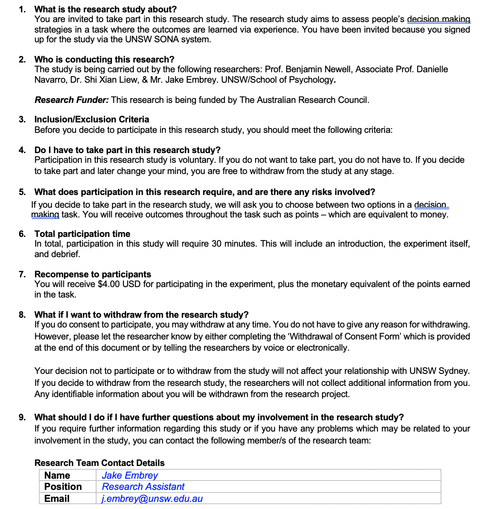
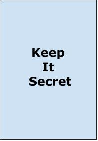
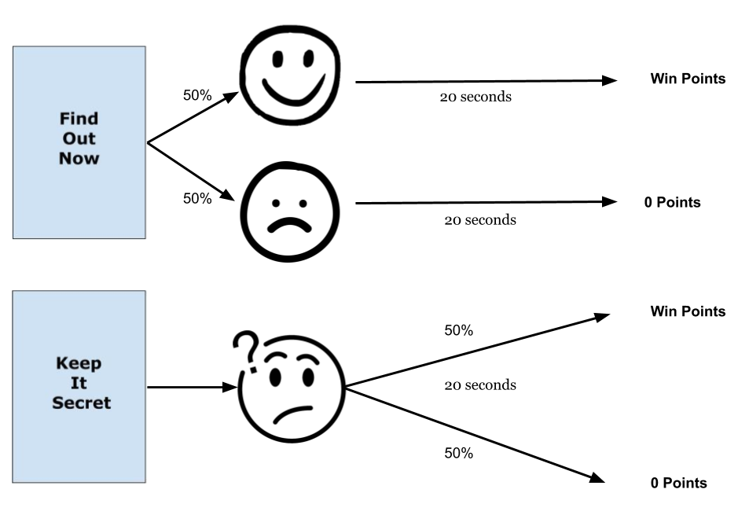
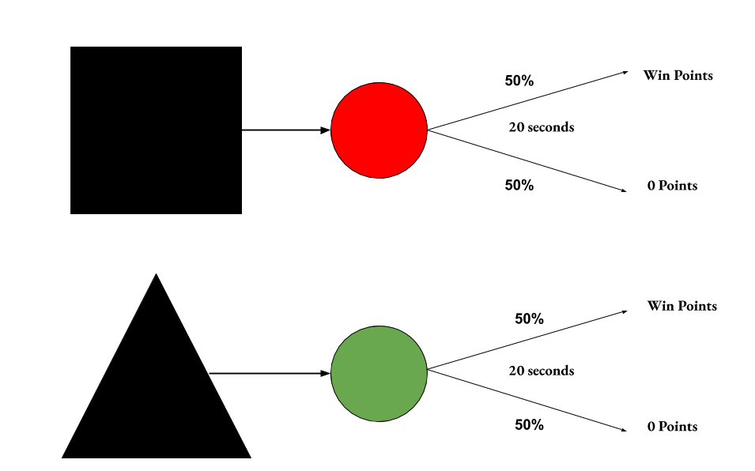

<!DOCTYPE html>
<html lang="en">
  <head>
    <meta charset="UTF-8">
    <meta name="viewport" content="width=device-width, initial-scale=1, shrink-to-fit=no">
    <meta http-equiv="X-UA-Compatible" content="ie=edge">
    <title>NWTK info_x_nonInfo</title>
    <!-- jspsych plugins -->
    <script src="jspsych-6.0.5/jspsych.js"></script>
    <script src="jspsych-6.0.5/plugins/jspsych-html-keyboard-response.js"></script>
    <script src="jspsych-6.0.5/plugins/jspsych-html-button-response.js"></script>
    <script src="jspsych-6.0.5/plugins/jspsych-image-keyboard-response.js"></script>
    <script src="jspsych-6.0.5/plugins/jspsych-bandit-exp6.js"></script>
    <script src="jspsych-6.0.5/plugins/jspsych-audio-keyboard-response.js"></script>
    <script src="jspsych-6.0.5/plugins/jspsych-survey-text.js"></script>
    <script src="jspsych-6.0.5/plugins/jspsych-instructions.js"></script>
    <script src="jspsych-6.0.5/plugins/jspsych-survey-multi-choice.js"></script>
    <!-- Fonts and CSS -->
    <link href='https://fonts.googleapis.com/css?family=Bowlby One SC' rel='stylesheet'>
    <link rel="stylesheet" href="https://stackpath.bootstrapcdn.com/bootstrap/4.3.1/css/bootstrap.min.css" integrity="sha384-ggOyR0iXCbMQv3Xipma34MD+dH/1fQ784/j6cY/iJTQUOhcWr7x9JvoRxT2MZw1T" crossorigin="anonymous">
    <link href="jspsych-6.0.5/css/banditMagnitude-task.css" rel="stylesheet" type="text/css"></link>
    <link href="jspsych-6.0.5/css/jspsych.css" rel="stylesheet" type="text/css"></link>
</head>
<style>
div.a {
  font-size: 30px;
}
</style>
<body>
  <!-- Link to jquery and Bootstrap -->
  <script src="https://code.jquery.com/jquery-3.3.1.slim.min.js" integrity="sha384-q8i/X+965DzO0rT7abK41JStQIAqVgRVzpbzo5smXKp4YfRvH+8abtTE1Pi6jizo" crossorigin="anonymous"></script>
  <script src="https://cdnjs.cloudflare.com/ajax/libs/popper.js/1.14.7/umd/popper.min.js" integrity="sha384-UO2eT0CpHqdSJQ6hJty5KVphtPhzWj9WO1clHTMGa3JDZwrnQq4sF86dIHNDz0W1" crossorigin="anonymous"></script>
  <script src="https://stackpath.bootstrapcdn.com/bootstrap/4.3.1/js/bootstrap.min.js" integrity="sha384-JjSmVgyd0p3pXB1rRibZUAYoIIy6OrQ6VrjIEaFf/nJGzIxFDsf4x0xIM+B07jRM" crossorigin="anonymous"></script>
</body>
  <script>

  // Initialise some variables
  let timeline = [];
  let bandit = null;
  let trialNumber = 0;
  let totalPoints = 0;
  

  //
    window.onbeforeunload = function(){

    		return "Are you sure you want to leave the experiment?";

    	};


  // Brief and consent form
  // Consent form

  var consent = {

type: 'instructions',

pages: [``],

show_clickable_nav: true,

button_label_next: "Accept"

};

timeline.push(consent);

  //Note on phone usage and other browsers
  var phoneNote = {
    type: 'html-button-response',
    stimulus: "<p>This experiment is now online instead of in-person in a controlled computer lab due to the current COVID-19 pandemic.</br> Please focus on the experiment and refrain from activities such as:</p>"+
    "- <b>switching to other tabs on your browser (this will be monitored via the experiment)</br> - going on your mobile phone/cell phone</br> - communicating with others</br></br></b>"+ 
    "<p>This way you are helping to provide data that is useful for psychological research.</p>",
    choices: ["I Understand"],
    prompt: "</br><b><p>Please place your phone out of sight</p></b>"
  };

  timeline.push(phoneNote);


  /* define welcome message */
  var welcome = {
    type: "html-keyboard-response",
    stimulus: "<p>Welcome to the experiment.</p><p>Press the SPACE bar to continue</p>"
  };
  timeline.push(welcome);


  //participant ID input
  var pid = Math.floor(Math.random() * 100000);

  // filename
  var filename = "NWTK_InfoxNonInfo_"+ pid;


  // Demographic questions


  var age = {
    type: 'survey-text',
    questions: [{prompt: "Please enter your age", placeholder: "e.g., 21", required: true}],
  };

  var gender = {
    type: "survey-multi-choice",
    questions: [{prompt: "Please indicate your gender", options: ["Female", "Male", "Other"], required: true}],
  };

  timeline.push(age, gender);


//Set of instructions for the informative (FON * KIS) condition


/* instructions 2 of win/loss  */
var instructions2 = {
   type: "html-button-response",
   stimulus: "<p> On each trial throughout the experiment you will choose between the options </br>"+
   "<b> Find Out Now </b> and <b> Keep It Secret </b>, as seen below.</p>"+
   "<div><div style= 'float: left; width: 300px; margin: 10px 10px;'>"+
   "</img></div>"+
   "<div style= 'float: right; width: 300px; margin: 10px 10px;'>"+
   "</img></div></div>" +
   "<br/><br/><br/><br/><br/><br/><br/><br/><br/><br/><br/>"+
   "<p>Each option results in winning points or receiving 0 points.</br>There is a 50% chance of either winning or receiving 0 points, but you won't receive the outcome until after a <b> 20 second delay</b>.</p>"+
   "<p>You can however gain information about the outcome as the two options, Find Out Now & Keep It Secret, suggest. </p>",
   choices: ["Next"],
   prompt: ""
 };
 
   /* cue diagram */

   var cueDiagram = {
     type: "html-button-response",
     stimulus: "</img>"+
     "<p>As seen above, when choosing the <b>'Find Out Now'</b> option, you will receive either a happy face or sad face.</br>"+
     "The happy face means you will win points after the delay, whereas the sad face means you will receive 0 points.</br></p>"+
     "<p> When choosing the <b> 'Keep it Secret' </b> option you will receive a confused face.</br> "+
     "This face appears regardless of whether you are going to win points or not. </p>"+
     "In short, choosing 'Find Out Now' allows you to find out the outcome before you experience it (after the delay).</br></br>",
     choices: ["Next"],
     prompt: ""
   };
   

   //Blocks and structure

   var instructionstructure = {
   type: "html-button-response",
   stimulus: "<p> There will be <b>four blocks</b> in the experiment.</br>"+
   "You will be given a short 15 second break between each block.</p>"+
   "<p><b>The points and the options will remain the same between the blocks.</b></p>The blocks are there just to give you a small break.</br></br>"+
   "<p>The points you earn in the task are also equal to <b> actual money</b>.</br> <b>1000 points is equal to $1 USD</b></p>"+
   "<p>This is the rate you will be paid at the experiment's end.",
   choices: ["Next"],
   prompt: ""
   };


// baseline for the instructionscorrect variable
var instructioncorrect = false;

// Questions for the quiz 
    var Q1_text = ["<b>Question 1:</b> How long is the delay? "];
    var Q1_answers = ["10 Seconds", "20 Seconds", "30 Seconds", "40 Seconds"];
    
    var Q2_text = ["<b>Question 2:</b> There is a 50% chance of winning points and a 50% chance of 0 points on each trial"];
    var Q2_answers = ["True", "False"];

    var Q3_text = ["<b> Question 3 </b> Choosing 'Keep It Secret' will always lead to a 'Confused Face' cue"];
    var Q3_answers = ["True", "False"]; 


    var correctstring = ['{"Q0":"' + Q1_answers[1] + '","Q1":"' + Q2_answers[0] + '","Q2":"' + Q3_answers[0] + '"}'];

// Variable to display if questions answered incorrectly
var splash_screen = {
        type: 'html-button-response',
        timing_post_trial: 0,
	    choices: ['Click here to read the instructions again'],
        is_html: true,
        stimulus: 'Unfortunately, at least one of your answers was incorrect.' + 
		"<p> "
    };

//timeline push to display the above
    var conditional_splash = {
        timeline: [splash_screen],
        conditional_function: function(data) {
			return !instructioncorrect // skip if correct
        }
    };

// Page that displays questions, checks against answers. If correct, "instructioncorrect" variable changes and they skip above. 

var instruction_check = {
        type: "survey-multi-choice",
        preamble: ["<p align='center'><b>Check your knowledge before you begin!</b></p>"],
        questions: [
			{prompt: Q1_text, options: Q1_answers, required: true,},
			{prompt: Q2_text, options: Q2_answers, required: true,}, 
      {prompt: Q3_text, options: Q3_answers, required: true,},
			],
		on_finish: function(data) {
            if( data.responses == correctstring) {
				action = false;
                		instructioncorrect = true; // If responses match answer string, variable changes to proceed. 
			};
        },
    };


  // timeline loop that ties it all together. If they pass, it skips conditional splash. If not, whole timeline loops

var loop_node = {
    timeline: [instructions2, cueDiagram, instructionstructure, instruction_check, conditional_splash],
    loop_function: function(data) {
        //var action = true;
  return !instructioncorrect // stop looping if correct
    }
};


// Instructions block for the non-info condition (triangle and square)
/* instructions 2 of win/loss  */
var instructions2Non = {
   type: "html-button-response",
   stimulus: "<p> On each trial throughout the experiment you will choose between two options </br>"+
   "a <b>Black Square </b> and <b> Black Triangle </b>, as seen below.</p>"+
   "<div><div style= 'float: left; width: 300px; margin: 10px 10px;'>"+
   "</img></div>"+
   "<div style= 'float: right; width: 300px; margin: 10px 10px;'>"+
   "</img></div></div>" +
   "<br/><br/><br/><br/><br/><br/><br/><br/><br/><br/><br/>"+
   "<p>Each option results in winning points or receiving 0 points.</br></br>There is a 50% chance of either winning or receiving 0 points, but you won't receive the outcome until after a <b> 20 second delay</b>.</p>",
   choices: ["Next"],
   prompt: ""
 };

 /* cue diagram */

 var cueDiagramNon = {
     type: "html-button-response",
     stimulus: "</img>"+
     "<p>As seen above, whether you choose the square or triangle, you will receive a coloured circle after the choice. </p> "+
     "<p>This circle will be on screen for 20 seconds until you win points or receive 0 points.</p>"+
     "<p>The coloured circle depends on which option you chose. </br> In the above example, choosing a triangle leads to a green circle and choosing the square leads to a red circle.</p>"+
     "Please note, the circles in your task will be different to the above colours.</br></br>",
     choices: ["Next"],
     prompt: ""
   };


 //Blocks and structure

 var instructionstructureNon = {
   type: "html-button-response",
   stimulus: "<p> There will be <b>four blocks</b> in the experiment.</br>"+
   "You will be given a short 15 second break between each block.</p>"+
   "<p><b>The points and the options will remain the same between the blocks.</b></p>The blocks are there just to give you a small break.</br></br></br></br>"+
   "<p>The points you earn in the task are also equal to <b> actual money</b>.</br> <b>1000 points is equal to $1 USD</b></p>"+
   "<p>This is the rate you will be paid at the experiment's end.",
   choices: ["Next"],
   prompt: ""
   };


// baseline for the instructionscorrect variable
var instructioncorrectNon = false;

// Questions for the quiz 
    var Q1_textNon = ["<b>Question 1:</b> How long is the delay? "];
    var Q1_answersNon = ["10 Seconds", "20 Seconds", "30 Seconds", "40 Seconds"];
    
    var Q2_textNon = ["<b>Question 2:</b> There is a 50% chance of winning points and a 50% chance of 0 points on each trial"];
    var Q2_answersNon = ["True", "False"];


    var correctstringNon = ['{"Q0":"' + Q1_answers[1] + '","Q1":"' + Q2_answers[0] + '"}'];

// Variable to display if questions answered incorrectly
var splash_screenNon = {
        type: 'html-button-response',
        timing_post_trial: 0,
	    choices: ['Click here to read the instructions again'],
        is_html: true,
        stimulus: 'Unfortunately, at least one of your answers was incorrect.' + 
		"<p> "
    };

//timeline push to display the above
    var conditional_splashNon = {
        timeline: [splash_screenNon],
        conditional_function: function(data) {
			return !instructioncorrectNon // skip if correct
        }
    };

// Page that displays questions, checks against answers. If correct, "instructioncorrect" variable changes and they skip above. 

var instruction_checkNon = {
        type: "survey-multi-choice",
        preamble: ["<p align='center'><b>Check your knowledge before you begin!</b></p>"],
        questions: [
			{prompt: Q1_textNon, options: Q1_answersNon, required: true,},
			{prompt: Q2_textNon, options: Q2_answersNon, required: true,}
			],
		on_finish: function(data) {
            if( data.responses == correctstringNon) {
				action = false;
                		instructioncorrectNon = true; // If responses match answer string, variable changes to proceed. 
			};
        },
    };


  // timeline loop that ties it all together. If they pass, it skips conditional splash. If not, whole timeline loops

var loop_nodeNon = {
    timeline: [instructions2Non, cueDiagramNon, instructionstructureNon, instruction_checkNon, conditional_splashNon],
    loop_function: function(data) {
        //var action = true;
  return !instructioncorrectNon // stop looping if correct
    }
};

// parameters for the informative condition
var banditParameters =  {
      type: "bandit-task-exp6",
      stimulus1: "NWTKimg/KeepItSecret.jpg", // Image for stimulus 1
      stimulus2: "NWTKimg/FindOutNow.jpg", // Image for stimulus 2
      instructionText: jsPsych.timelineVariable('instructionText'), // the instructions given above the trial
      cue1: ["cues/confusedFace.png", "cues/confusedFace.png"], // Array of filenames of cue images for stimulus 1
      cue2: ["cues/Sad.png", "cues/Happy.png"], // Array of filenames of cue images for stimulus 2
      cueProbs1: [0.5, 0.5], // Array of probabilities associated with stimulus 1 cue images. Must be the same length
      cueProbs2: [0.5, 0.5], // Array of probabilities associated with stimulus 2 cue images. Must be the same length
      outcomes1: [[120, 120], [0, 0]], // Array that contains arrays of possible outcomes associated with each cue for stimulus 1
      outcomes2: [[0, 0], [80, 80]], // Array that contains arrays of possible outcomes associated with each cue for stimulus 2
      outcomeProbs1: [[0.5, 0.5], [0.5, 0.5]], // Array with probabilities associated with outcomes1. Must be the same length
      outcomeProbs2: [[0.5, 0.5], [0.5, 0.5]], // Array with probabilities associated with outcomes2. Must be the same length
      feedbackDuration: 1000,
      preTrialInterval: 0,
      cueDuration: 20000,
      
    };


//Randomisation of Triangle and Square Choices for the non-info

var choiceArray = [1,2]

var stimSelector = jsPsych.randomization.shuffle(choiceArray,1);

if (stimSelector[0] == 1) {
var subStim = "NWTKimg/square.png" 
var optStim = "NWTKimg/triangle.png"
}
else if (stimSelector[0] == 2) {
var subStim = "NWTKimg/triangle.png"
var optStim = "NWTKimg/square.png" 
};  

// Randomisation of circle colours (non-info cues to appear) for the non-info condition

var cueArray = [1,2]

var cueSelector = jsPsych.randomization.shuffle(cueArray,1);

if (cueSelector[0] == 1) {
var subCue = "cues/Yellow.png" 
var optCue = "cues/Blue.png"
}
else if (cueSelector[0] == 2) {
var subCue = "cues/Blue.png"
var optCue = "cues/Yellow.png" 
};


// Main parameters for the non-info condition of the task
 

var banditParametersNon =  {
      type: "bandit-task-exp6",
      stimulus1: optStim, // Image for stimulus 1
      stimulus2: subStim, // Image for stimulus 2
      instructionText: jsPsych.timelineVariable('instructionText'), // the instructions given above the trial
      cue1: [optCue, optCue], // Array of filenames of cue images for stimulus 1
      cue2: [subCue, subCue], // Array of filenames of cue images for stimulus 2
      cueProbs1: [0.5, 0.5], // Array of probabilities associated with stimulus 1 cue images. Must be the same length
      cueProbs2: [0.5, 0.5], // Array of probabilities associated with stimulus 2 cue images. Must be the same length
      outcomes1: [[120, 120], [0, 0]], // Array that contains arrays of possible outcomes associated with each cue for stimulus 1
      outcomes2: [[0, 0], [80, 80]], // Array that contains arrays of possible outcomes associated with each cue for stimulus 2
      outcomeProbs1: [[0.5, 0.5], [0.5, 0.5]], // Array with probabilities associated with outcomes1. Must be the same length
      outcomeProbs2: [[0.5, 0.5], [0.5, 0.5]], // Array with probabilities associated with outcomes2. Must be the same length
      feedbackDuration: 1000,
      preTrialInterval: 0,
      cueDuration: 20000,
      
    };


 /* instructions for actual experiment */

 let experimentstart = {
      type: "html-button-response",
      stimulus: "<p> The experiment is about to start. <br/> Click start to continue, or email your researcher <b>(j.embrey@unsw.edu.au)</b> if you have any questions before starting.",
      choices: ["Start"],
      prompt: "",
    }


/* magnitude blocks for experiment */


var blockEnd = {
    type: 'html-keyboard-response',
    stimulus: "<p><b> Congratulations, you have finished this block. </b> </p>"+
    "<p>Please take a short break before moving onto the next block.</p>"+
    "<p>The next block will start after a 15 second break.</p>"+
    "<b>Remember, the point rewards are the same between blocks",
    trial_duration: 15000,
    choices: jsPsych.NO_KEYS,
    prompt: ""
};


var  suboptimalEV = {
      timeline: [
                banditParameters
                  ],
              timeline_variables: [
              {instructionText: "<b>20 Second Delay</b>"},
              ],
            repetitions: 15,
            on_finish: function(data){
              data.magnit = "Informative";
        
            }
          };


var  suboptimalEVNon = {
      timeline: [
                banditParametersNon
                  ],
              timeline_variables: [
              {instructionText: "<b>20 Second Delay</b>"},
              ],
            repetitions: 15,
            on_finish: function(data){
              data.magnit = "NonInfo";
        
            }
          };


// End of all four blocks

var preQuestions = {
  type: 'html-button-response',
  stimulus: "<p> Congratulations, you have finished the main part of the experiment. </p>"+
  "<p>Before you finish, we have a few short questions about the options and outcomes you saw in the task.</p>",
  choices: ['Continue'],
  prompt: ""
}; 


// Post task questionnaires
//FON or KIS

var postFON = {
  type: 'survey-text',
  questions: [{prompt: "</img>"+
  "<p>What do you estimate the <b>average 'win'</b> to be when you choose the above option (excluding 0 point outcomes)?", placeholder: "e.g., 500 ", required: true}]
};

var postKIS = {
  type: 'survey-text',
  questions: [{prompt: "</img>"+
  "<p>What do you estimate the <b>average 'win'</b> to be when you choose the above option (excluding 0 point outcomes)?", placeholder: "e.g., 500 ", required: true}]
};

// Square and triangle (non-info condition)
var postOptimal = {
  type: 'survey-text',
  questions: [{prompt: "</img>"+
  "<p>What do you estimate the <b>average 'win'</b> to be when you choose the above option (excluding 0 point outcomes)?", placeholder: "e.g., 500 ", required: true}]
};


var postSub = {
  type: 'survey-text',
  questions: [{prompt: "</img>"+
  "<p>What do you estimate the <b>average 'win'</b> to be when you choose the above option (excluding 0 point outcomes)?", placeholder: "e.g., 500 ", required: true}]
};


// Condition allocator and timeline push

var condArray = [0,1];
var condition = jsPsych.randomization.sampleWithoutReplacement(condArray,1);

if (condition == 0) {
    timeline = timeline.concat(loop_node, experimentstart, suboptimalEV, blockEnd, suboptimalEV, blockEnd, suboptimalEV, blockEnd, suboptimalEV, preQuestions, postFON, postKIS)
}
else if (condition == 1) {
    timeline = timeline.concat(loop_nodeNon, experimentstart, suboptimalEVNon, blockEnd, suboptimalEVNon, blockEnd, suboptimalEVNon, blockEnd, suboptimalEVNon, preQuestions, postSub, postOptimal)

};

jsPsych.data.addProperties({condition: condition});
jsPsych.data.addProperties({PID: pid});


//obtain mTurk ID off participant so they can be paid accordingly 

/* var mTurkID = {
  type: 'survey-text',

} */

var workID = {
    type: 'survey-text',
    questions: [{prompt: "<p><b>What is your mTurk Worker ID?</b></p>This will assist in paying your bonus earned during the task.", placeholder: "", required: true}],
  };

  timeline.push(workID);

//Finished screen
var taskComplete = {
  type: 'html-button-response',
  stimulus: "<p><b>The task is now finished</b></p>"+
  "Copy the following code:  <b>" + pid +
  "</b></br><p>This is your HIT which you will need to receive payment via mTurk.</p>"+
  "<p><b>Thank you for taking part and completing the experiment!</b></p>",
  choices: ['Finish'],
  prompt: ""
};

timeline.push(taskComplete);


  /* start the experiment */
  function saveData(name, data){
              var xhr = new XMLHttpRequest();
              xhr.open('POST', 'save_data.php');
              xhr.setRequestHeader('Content-Type','application/json');
              xhr.send(JSON.stringify({filename: filename, filedata: data}));
            };


            //jsPsych.data.displayData('csv');
            jsPsych.init({
              timeline:timeline,
              on_trial_finish: function(data){saveData(filename, jsPsych.data.get().csv())},
              on_finish: function(data){saveData(filename, jsPsych.data.get().csv())}  // uncomment to locally save data file as csv
            });

      </script>

</html>
